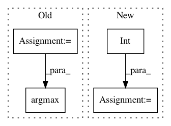

9d22742baeeb608bac5594c3ece96f62f0734dce,qanta/buzzer/trainer.py,Trainer,test,#Trainer#Any#,62
Before Change
ys = self.model(batch.vecs, train=False)
ys = F.swapaxes(F.reshape(ys, (length, batch_size, -1)), 0, 1)
ys.to_cpu()
ys = ys.data
actions = np.argmax(ys, axis=2).tolist() // length, batch
for i, (qnum, action) in enumerate(zip(batch.qids, actions)):
if isinstance(qnum, np.ndarray):
qnum = qnum.tolist()
After Change
for qnum, scores, mask in zip(batch.qids, ys.data, masks):
if isinstance(qnum, np.ndarray):
qnum = qnum.tolist()
total = int(sum(mask))
buzzes[qnum] = scores[:total].tolist()
progress_bar(*test_iter.epoch_detail)
test_iter.finalize(reset=True)
progress_bar.finalize()
In pattern: SUPERPATTERN
Frequency: 3
Non-data size: 4
Instances
Project Name: Pinafore/qb
Commit Name: 9d22742baeeb608bac5594c3ece96f62f0734dce
Time: 2017-05-13
Author: sjtufs@gmail.com
File Name: qanta/buzzer/trainer.py
Class Name: Trainer
Method Name: test
Project Name: bashtage/linearmodels
Commit Name: 65add949bbcd61e2b1c3b8dc33390ac15d19cd84
Time: 2021-02-22
Author: kevin.k.sheppard@gmail.com
File Name: linearmodels/shared/linalg.py
Class Name:
Method Name: has_constant
Project Name: wenwei202/iss-rnns
Commit Name: 00d47eb3923d8722f75d56ba15139ad6821e2f50
Time: 2016-08-29
Author: seominjoon@gmail.com
File Name: basic/evaluator.py
Class Name: AccuracyEvaluator2
Method Name: compare